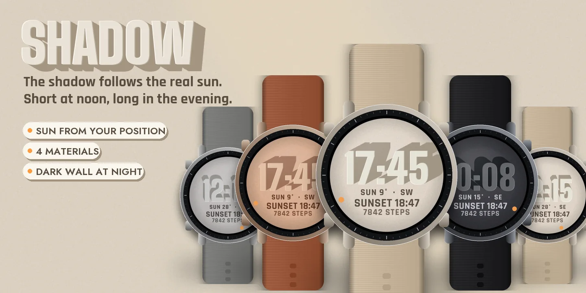
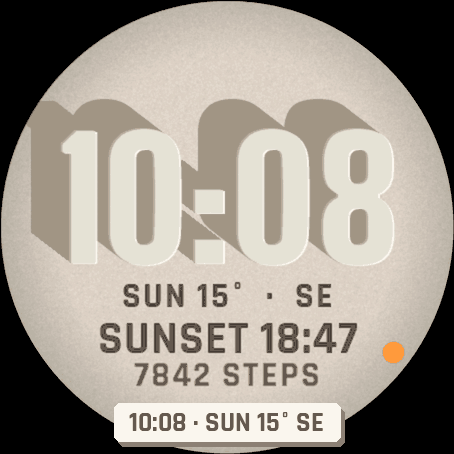
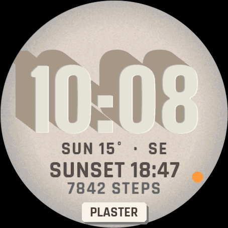
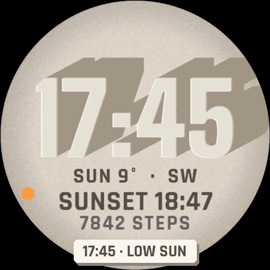
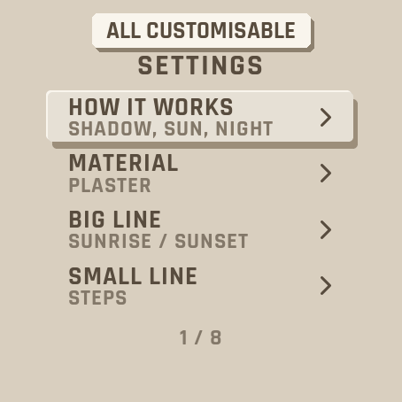
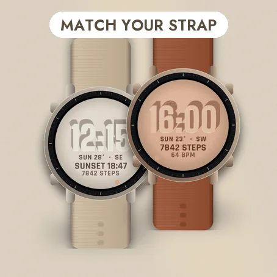

Settings on the watch
Hold UP, pick Watch Face, select Shadow, press START, then Customize. The menu is drawn like the face: a short How it works guide, the material, the two lines of data, the night wall, the hours, the leading zero and the always-on brightness. The same settings are in Garmin Connect if you prefer the phone.
The shadow follows the sun
Big digits stand out from a wall and cast a long shadow. The shadow falls away from the real sun: its direction and height are computed on the watch from your last known position and the time (the face asks for the location permission; the position never leaves the watch). At noon the shadow is short; in the evening it stretches across the wall. A dot on the edge shows where the sun is, and the line under the time gives its height and direction, for example SUN 15° SE.
Day and night
When the sun is down, there is no shadow, and the wall turns to dark basalt if you leave Night wall on. If the watch does not know its position yet, the digits are lit by a soft studio light and the sun line shows --.
Data
A big line and a small line, each one of your choice: the next sunrise or sunset, steps, heart rate, watch battery, Body Battery, calories, floors, distance, intensity minutes, notifications or temperature. If your watch has no value, it shows -- rather than a made-up number. Nothing leaves the watch.
Make it yours
- Four materials: Plaster, Terracotta, Concrete and Basalt.
- Hours like your watch, or always 24-hour, or 12-hour with or without a leading zero.
Always-on
A separate always-on design on a black screen: the digits in fine grey outline with the date. It shifts slightly every minute to protect the screen. A brighter option is in the menu.
Compatible with the Garmin AMOLED watches listed below. English only. Questions or a watch you would like to see supported: use the support e-mail on this page.